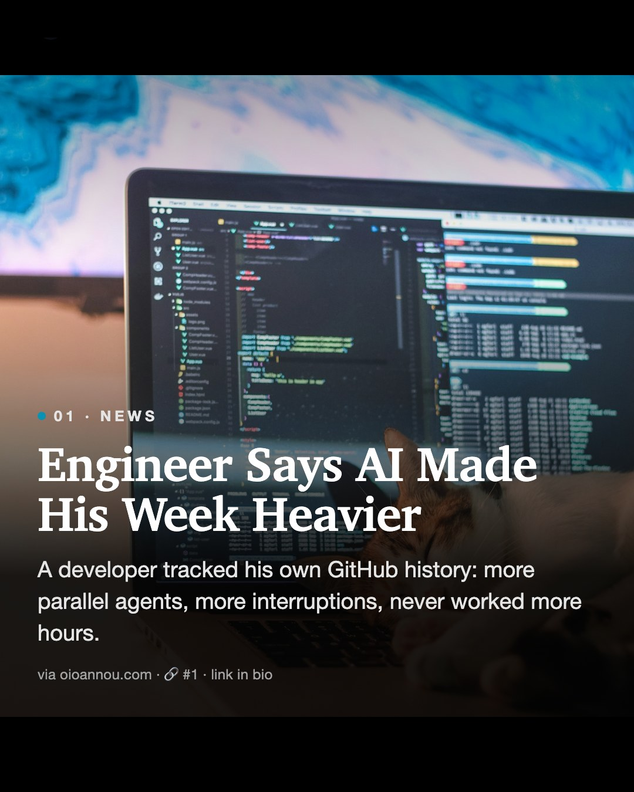
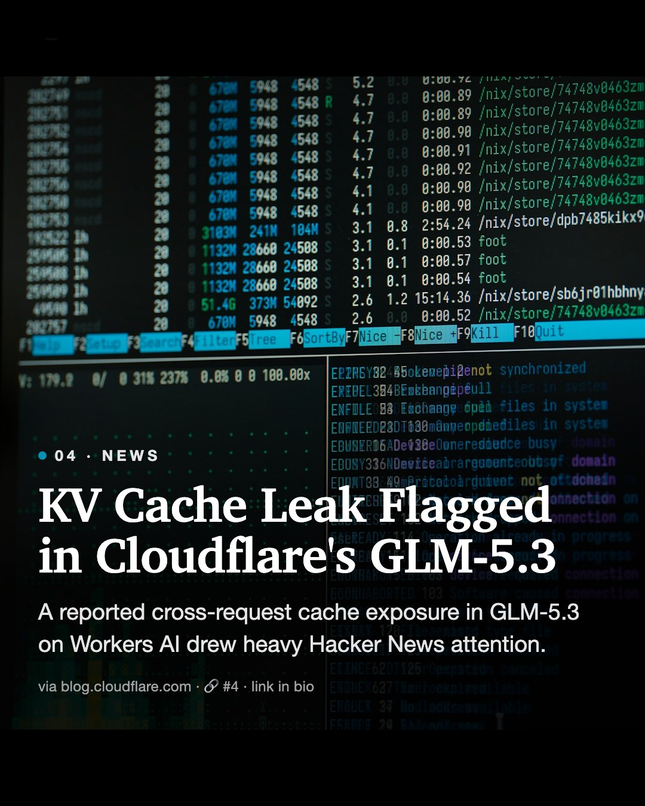
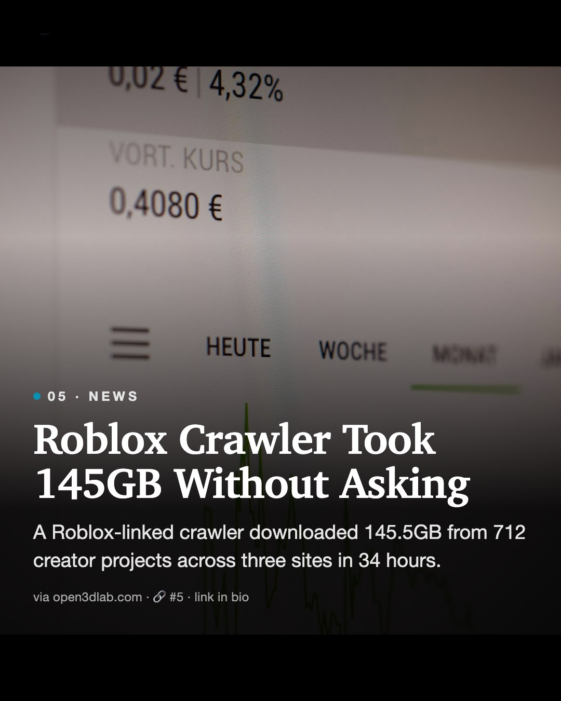

Daily Diff AI
28 Oct 2026 · tap a story to read the source · same numbers as the carousel

#1 · NEWS
Engineer Says AI Made His Week Heavier
A developer tracked his own GitHub history: more parallel agents, more interruptions, never worked more hours.
Read on oioannou.com →#2 · NEWS
Copilot Gets Server Auth and Auto Permissions
GitHub Copilot now supports server-to-server auth and generally available assisted permissions judged by an LLM.
Read on github.blog →#3 · NEWS
Akamai Blocks Agent Network Access by Default
New Akamai Agent Sandbox runs agent code in a WebAssembly boundary with outbound network blocked by default.
Read on reddit.com →
#4 · NEWS
KV Cache Leak Flagged in Cloudflare's GLM-5.3
A reported cross-request cache exposure in GLM-5.3 on Workers AI drew heavy Hacker News attention.
Read on blog.cloudflare.com →
#5 · NEWS
Roblox Crawler Took 145GB Without Asking
A Roblox-linked crawler downloaded 145.5GB from 712 creator projects across three sites in 34 hours.
Read on open3dlab.com →#6 · TOOL
An 11-Hour Course on Building Reasoning Models
Sebastian Raschka released 8 videos covering evaluation, RL, and distillation, built from scratch in PyTorch.
Read on magazine.sebastianraschka.com →